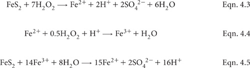

This method, adapted from Ford and Calvert (1970), is best used on ‘as received’ (field moist) soil to obtain an indication of the presence of oxidisable sulfide ions (S2–). If present, S2– ions are oxidised with heated 30% H2O2 to form H2SO4, with a consequential lowering of pH. Should soil pH decline to 3.5 or less, it can be assumed that soil and drainage water acidity problems will emerge when the soil or sediment is exposed to air. The initial phases of this oxidation reaction, plus a further oxidative reaction catalysed by Fe2+ as an early reaction product, are shown as Equations 4.3 to 4.5. Similar chemistry is involved in the first part of Method 20C1.

30% Hydrogen Peroxide (H2O2)
Use analytical grade, as it is common for commercial grades to contain hydrochloric acid as a stabiliser. Handle with care at all times.
10% Barium Chloride Solution
Dissolve 100 g barium chloride dihydrate (BaCl2.2H2O) in deionised water and make volume to 1 L.
Weigh 1 g soil (wet as received) into a 200 mL, wide-mouth conical flask. Add 20 mL of 30% H2O2 and place on a boiling water bath. Remove from the water bath if the reaction is too vigorous. Otherwise, continue heating until the solution clears, indicating that the reaction is complete. This should take around 30 min.
As organic acids can interfere with the pH measurement it is important to ensure that all OM is destroyed. Accordingly, if the solution fails to clear on completion of the initial reaction, add additional 30% H2O2 (with care) and continue heating until clearing is achieved. Allow to cool to room temperature.
Standardise the pH meter as described in Method 4A1 and measure pH as for Method 4B1.
The presence of SO42– in the oxidised solution can be confirmed qualitatively by the addition of 1 mL of 10% BaCl2 solution to the filtered or centrifuged supernatant. If present, a precipitate of BaSO4 will form.
Report pH (pH of H2O2) on an ‘as received’ basis.